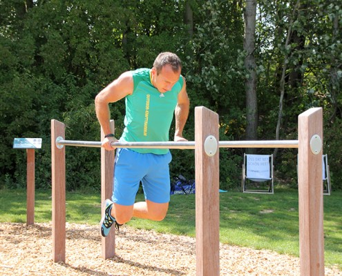

Ce este fitnessul? ⋆ Ce beneficii are? | Sfaturi Decathlon: Articole cu Informatii Sportive, Nutritie, Antrenamente
Sfaturi Decathlon, articole și informații din domeniul sportiv
decathlon.ro Sporturi Drumeție, trekking și camping Drumetie,trekking Camping Fitness Bodybuilding Cardio Pilates Schi si Snowboard Schi Schi fond Snowboard Ciclism Ciclism copii Ciclism de oras Ciclism pe sosea Ciclism polivalent Mountain Bike Sporturi de echipă Fotbal Baschet Handbal Rugby Volei Sporturi de apă Înot Aquagym Waterpolo Snorkeling Scuba Diving Surf, Bodyboard Navigatie Caiac Stand Up Paddle Role, Trotinete, Skateboard Role Trotinete Skateboard Sporturi cu racheta Tenis Tenis de masa Badminton Squash Padel Vânătoare Alergare și Trail Alergare Atletism Jogging Trail Yoga, Dans, Gimnastică Yoga Gimnastică Balet Dans Mers sportiv, Mers nordic Mers sportiv Mers nordic Pescuit Echitație Sporturi de contact Box Judo, Aikido Karate, Taekwondo Escaladă, Alpinism Escalada Alpinism Slackline Sporturi de Precizie Tir cu arcul Darts Golf Petanque Sporturi de gheață Patinaj Hochei pe gheață Sporturi de vânt Zmeie Kitesurf Windsurf Triatlon Scrimă Sănătate și nutriție Nutriție Proteică Nutriție și hidratare Îngrijire Recuperare sportivă Partenerul tău sportiv Evenimente Inovaţii Antrenamente Locații de practică Cadouri sportive ȘTIAI CĂ…? CardioCe este fitnessul? ⋆ Ce beneficii are?
Posted on Ultima actualizare: Jul 6, 2021 6 iulie 2021 7 minute read 14.6K vizualizări by DecathlonCe este fitnessul? ⋆ Ce beneficii are? by Decathlon Posted on Ultima actualizare: Jul 6, 2021 6 iulie 2021
Probabil ai auzit de foarte multe ori cuvântul “fitness”, în diferite contexte, însă nu ai o idee clară asupra a ceea ce înseamnă, cu adevărat, acest termen. Nu este nici o problemă! A venit timpul să găsești răspunsul la întrebarea din titlu, mai ales dacă îți dorești un stil de viață activ și sănătos, pentru că prin intermediul fitness-ului, îl poți obține și te poți bucura de beneficii extraordinare atât pe termen scurt, cât și pe termen lung!
Cuprins
Ce este fitness-ul? Care sunt obiectivele generale ale fitness-ului? Ce inseamnă un antrenament fitness la sală? Aparate/Echipamente pentru fitness Îmbrăcăminte și încălțăminte Aparate Care sunt avantajele și beneficiile de care te bucuri datorită fitness-ului1. Ce este fitness-ul?
Răspuns: Condiția de a fi în formă și de a fi sănătos.
Fitness este un termen folosit pentru a acoperi o arie largă de activități fizice care cuprind antrenarea musculaturii, streching-ul și exercițiile cardio, ce au ca scop menținerea organismului cât mai sănătos și tonifiat. Cu alte cuvinte, fitness-ul te ajută să fii în formă, atât fizic, cât și psihic, pentru că rezultă într-o stare de bine generală, o încredere în sine accentuată și o ușurință în a îndeplini atât sarcinile din domeniu sportiv, cât și cele zilnice. De cele mai multe ori, acest cuvânt este asociat nu doar cu mișcarea fizică, ci și cu o alimentație echilibrată și odihnă corespunzătoare. Din acest motiv, atunci când zici “fitness” trebuie să te gândești la un stil de viață, nu doar la anumite acțiuni ocazionale.
De fapt, aceasta este și ideea din spatele noțiunii de fitness: o rutină constantă și un set de antrenamente cu caracter permanent care te vor ajuta să arăți bine, să te simți bine, să ai suficientă energie pentru a face față oricăror provocări din viața de zi cu zi și, mai presus de orice, să fii sănătos.
2. Care sunt obiectivele generale ale fitness-ului?
Popularitatea și aprecierea fitness-ului sunt bazate, în principal, pe atingerea obiectivelor generale pe care acesta le are. Iată care sunt:
Îmbunătățirea condiției fiziceAcest lucru are loc prin dezvoltarea forței, vitezei, puterii, a echilibrului, rezistenței, coordonării, a mobilității și flexibilității musculare, dar și articulare.
Îmbunătățirea sistemelor de suport a condiției fizice idealeCe înseamnă? Eficientizarea funcționarii proceselor metabolice, a sistemului imunitar, a sistemului cardio-vascular, a sistemul respirator și a sistemului nervos central.
Îmbunătățirea aspectului fizicCum? Prin pierderea kilogramelor în plus, a țesutului adipos și prin antrenarea musculaturii pentru a obține rezultatul visat. De asemenea, cu ajutorul exercițiilor specifice, greutatea ta poate rămâne aceeași, însă compoziția fizică se poate schimba. Cu alte cuvinte, vei avea același număr de kilograme, însă vei avea un trup tonifiat și bine definit, fără grăsime.
Îmbunătățirea stimei de sineÎn urma celor menționate anterior, se vor observa și efectele semnificative la nivel psihic: creșterea încrederii în propria persoană, o atitudine pozitivă asupra vieții, ușurința în relaționarea cu cei din jur.
3. Ce presupune un antrenament fitness la sală ?
Sălile de antrenament se numesc și “săli de fitness”, tocmai pentru că, în cadrul acestora, poți desfășura toate activitățile la care se referă acest termen.
Există câteva componente majore care te ajută să fii în formă, care fac parte din fitness și după care poate fi măsurat nivelul de “wellness”, și anume:
Performanța cardiorespiratorieRezistența cardiorespiratorie indică nivelul la care organismul poate furniza energie în timpul activităților fizice prin intermediul sistemului respirator și cardiovascular (circulator). Exercițiile care antrenează această performanță sunt cele cardio, adică cele care măresc ritmul cardiac, precum: jogging-ul, alergarea pe bandă , ciclismul, înotul, săriturile cu coarda.
Forța musculară
Aceasta crește prin antrenarea constantă a grupelor musculare și se referă la abilitatea mușchilor de a exercita o anumită forță în timpul unor activități. În sala de fitness, exercițiile care aduc îmbunătățiri la acest capitol sunt cele care implică împingerea sau ridicarea greutăților din poziții specifice.
Rezistența muscularăRezistența se referă la capacitatea mușchilor de a continua efortul pe o perioadă mai lungă de timp fără a obosi. Deși exercițiile pentru forța musculară duc la mărirea țesutului muscular, cele de rezistență nu au acest efect. Organismul se concentrează mai mult pe sistemul cardiovasculator, pentru a oxigena corespunzător țesuturile decât pe dezvoltarea în volum a musculaturii.
Cele mai bune exerciții sunt: planșa, flotările, genuflexiunile, fandările și abdomenele.
Flexibilitatea
Flexibilitatea ligamentelor, a tendoanelor și a articulațiilor asigură continuitatea în mișcări și scade riscul accidentărilor. Aceasta se antrenează prin exerciții de streching: dinamice (încălzirea), statice-active (șederea în poziții precum șpagat, semi-șpagat pentru o anumită perioadă de timp) sau pendulare (doar după ce corpul este bine încălzit, pentru că acestea implică acțiunea de “legănare” în anumite poziții cu scopul de a mări mobilitatea). În plus, ele ajută și la detensionarea mușchilor.
Compoziția corpuluiCompoziția măsoară, cu aproximație, proporția de grăsime, masă musculară, oase și apă din corp. Este important să cunoști aceste aspecte, pentru că pe baza lor se poate alcătui antrenamentul ideal pentru tine, care îți va aduce cele mai bune rezultate în funcție de obiectivul tău. Totodată, această componentă a fitness-ului este un indicativ important în legătură cu sănătatea ta.
4. Aparate/Echipamente pentru fitness
Indiferent dacă vrei să execuți antrenamentele fitness la sală sau, dimpotrivă, în confortul casei tale, trebuie să cunoști care sunt aparatele și echipamentele necesare pentru buna desfășurare a activităților fizice de acest tip.
Îmbrăcăminte și încălțăminte
Îmbrăcămintea pentru fitness și încălțămintea potrivită sunt foarte importante, pentru că îți asigură confortul pe durata antrenamentelor, dar și siguranța (adidașii cu talpa potrivită reduc riscul accidentărilor).
Poți alege între:
Preț și detalii aici
Preț și detalii aici
Preț și detalii aici
Preț și detalii aici
Preț și detalii aici
Preț și detalii aici
Aparate
În general, aparatele pentru fitness se regăsesc în spațiile special amenajate pentru sport, însă nu înseamnă că nu îți poți achiziționa câteva și pentru acasă, mai ales dacă nu ai întotdeauna timp să ajungi la sală. Prin intermediul acestora, poți face exercițiile necesare unei condiții fizice de invidiat. În plus, este bine să cunoști care sunt aparatele cu care va trebui să te “împrietenești” dacă vrei un stil de viață activ!
Stepper
Un stepper este ideal pentru a face exerciții cardio (urcări și coborâri) acasă ori la sală! Împreună cu acesta, poți utiliza și corzile elastice, pentru dezvoltarea musculaturii din partea de sus a corpului.
Preț și detalii aici
Preț și detalii aici
Coardă
Aceasta este un instrument de mare ajutor, iar săriturile cu coarda nu trebuie să lipsească din sesiunile tale de antrenament!
Preț și detalii aici
Preț și detalii aici
Biciclete
Probabil știi deja că bicicletele fixe fac parte din arsenalul oricărei săli de fitness, dar și din programul de antrenament ideal pentru un corp tonifiat. Cele mai eficiente modele sunt:
Preț și detalii aici
Preț și detalii aici
Preț și detalii aici
Bandă de alergat
Orașul e poluat și zgomos sau vremea nu îți permite să alegi în aer liber? Nici o problemă! Cu ajutorul benzilor de alergat, o poți face ori la sală, ori acasă!
Preț și detalii aici
Preț și detalii aici
5. Care sunt avantajele și beneficiile de care te bucuri datorită fitness-ului?
Așa cum ai aflat deja, fitness-ul are un impact pozitiv asupra calității vieții, atât pe termen lung, cât și pe termen scurt. Dacă ai nevoie de o motivație în plus pentru a adopta un stil de viață mai activ, care implică și exercițiile menționate anterior, este bine să cunoști avantajele și beneficiile de care te vei bucura:
Antrenamentele nu necesită foarte mult timp Nivelul de dificultate și durata cresc în timp, odată ce capacitățile tale se dezvoltă Exercițiile pot fi practicate și au efecte pozitive la orice vârstă Sistemul tău imunitar este întărit, iar predispoziția la boli scade Inima și sistemul cardiovascular vor funcționa mult mai bine Va fi mult mai ușor să reduci nivelul de stres din viața ta Vei arăta mai bine Vei putea îndeplini sarcinile de zi cu zi fără dificultate și fără să obosești, chiar și la o vârstă mai înaintată Vei căpăta mai multă energie și chef de viață Vei reduce colesterolulAșadar, făcându-i loc fitness-ului în viața și în rutina ta zilnică, nu vei avea decât de câștigat! Nu uită să adopți și o dietă echilibrată și să te odihnești pentru a te bucura pe deplin de efectele pozitive.
Sfat: la început de drum, este bine să apelezi la serviciile și la îndrumarea unui profesionist, care îți va recomanda cele mai potrivite practici pentru tine!
Like Pin it +1Cât de mult ți-a plăcut articolul nostru?
( 16 voturi, medie: 4,75 din 5)Încarc
Decathlon
Misiunea noastră este să facem sportul accesibil tuturor! La Decathlon, dorim să punem bazele unor relații de durată cu clienții noștri și să îmbunătățim calitatea vieții prin încurajarea practicării sportului în mod regulat. Valorile principale după care ne ghidăm sunt vitalitatea și responsabilitatea. Debordând de energie, entuziasm și idei, echipa noastră s-a angajat să ofere tuturor beneficiile sportului. Etosul acesta este echilibrat de o responsabilitate profundă: față de noi, reciprocă, față de siguranța clienților noștri și față de viitorul planetei.
Articolul precedent Antrenamente CardioEXERCITII CARDIO ⋆ PENTRU ACASA
Posted on Ultima actualizare: Nov 5, 2020 5 noiembrie 2020 by Decathlon Vezi articolul Următorul articol CardioCele Mai Bune Benzi De Alergat
Posted on May 28, 2019 28 mai 2019 by Decathlon Vezi articolulArticole asemănătoare
Vezi articolul Alergare Cardio Îngrijire PilatesCum îți alegi bustiera potrivită pentru sport recomandări utile
Posted on Ultima actualizare: Jul 6, 2021 6 iulie 2021 by Decathlon Vezi articolul Bodybuilding CardioFebra musculară: în ce condiții apare și cum o ții sub control
Posted on Ultima actualizare: Feb 1, 2021 1 februarie 2021 by Decathlon Vezi articolul Alergare Antrenamente Cardio JoggingBanda de alergat electrică sau magnetică Alegerea potrivită pentru a face sport în casă
Posted on Ultima actualizare: Oct 23, 2020 23 octombrie 2020 by Decathlon Vezi articolul Cardio Fitness GimnasticăGimnastica de dimineață beneficii și tipuri de exerciții recomandate
Posted on Ultima actualizare: Feb 8, 2021 8 februarie 2021 by Decathlon Vezi articolul CardioTRAMBULINA, SĂRITURI FĂRĂ EFORT!
Posted on Ultima actualizare: May 28, 2020 28 mai 2020 by Decathlon Vezi articolul Cardio FitnessSaritul corzii ⋆ pentru abdomen si SLABIT
Posted on Ultima actualizare: Dec 7, 2020 7 decembrie 2020 by Decathlon Vezi articolul CardioCele mai bune aparate de fitness Iată ce să alegi dacă vrei să faci sport acasă!
Posted on Ultima actualizare: Oct 6, 2020 6 octombrie 2020 by Decathlon Vezi articolul CardioCele Mai Bune Benzi De Alergat
Posted on May 28, 2019 28 mai 2019 by DecathlonLasă un răspuns Anulează răspunsul
Articole recomandate
Antrenamente Cardio EXERCITII CARDIO ⋆ PENTRU ACASA By Decathlon / Ultima actualizare: Nov 5, 2020 Antrenamente Cardio Exerciții pentru abdomen pe care le poți face acasă sau la sală By Decathlon / Ultima actualizare: Jul 14, 2021 Pilates PILATES DESCOPERIȚI BENEFICIILE ACESTUI SPORT By Decathlon / Ultima actualizare: Mar 10, 2020 Despre Decathlon Cine suntem ? Magazinele noastre Inovații Cariere Contactați-ne Mențiuni legale Termeni si condiții Protecția datelor personale Prelucrarea datelor personale Cookies ANPC SOL Partenerul tău sportiv Decathlon.ro Decathlon Coach Evenimente Experiențe Sportive NE GĂSIȚI PE Termeni și Condiții - Protecția datelor personale - F.A.QIntrodu cuvintele de căutat și apasă ENTER